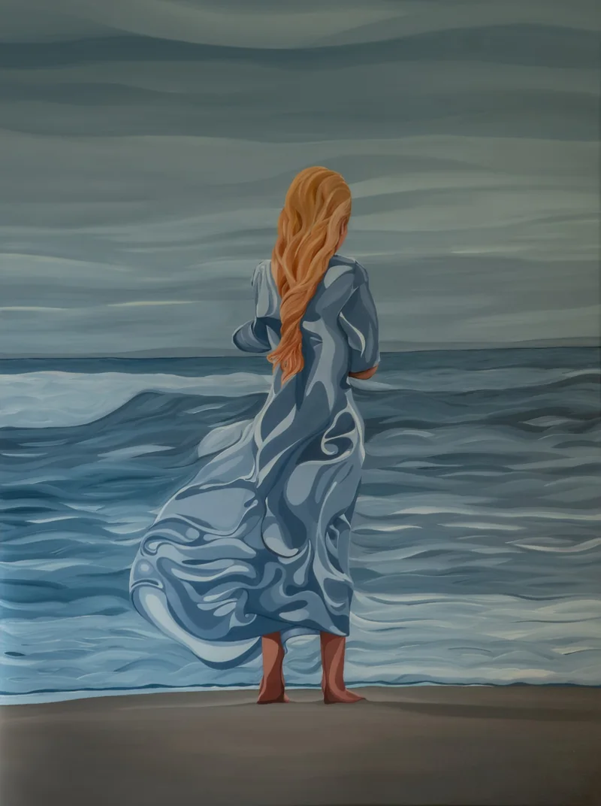
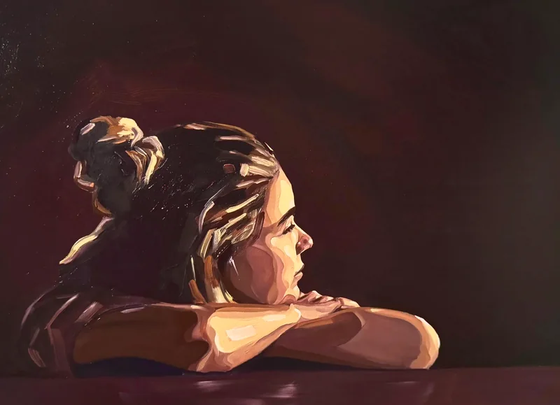
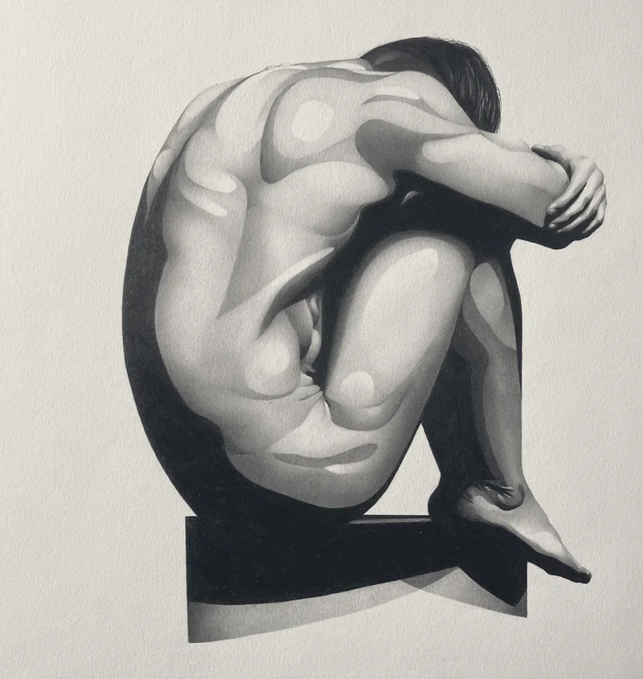
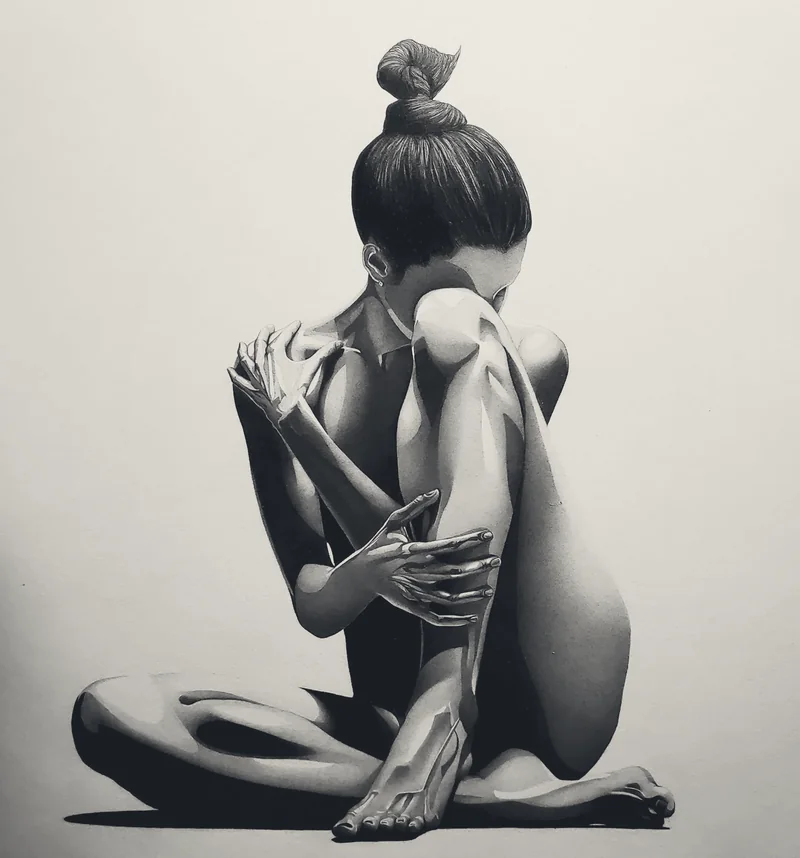
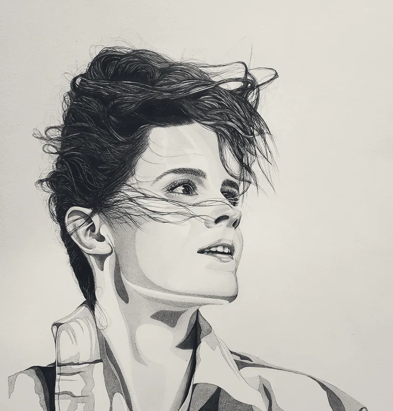

05 · Practice
Drawing and painting
My creative portfolio
These graphite and oil pieces focus on emotive figures. By layering sharp shapes of light against smooth gradients, I define forms through the movement of light.
It is also how I work on a model or a microcontroller. I cannot open either one and simply read it. I probe it to watch how it responds and draw the structure out from the surface.




